This document is a draft of a potential specification. It has no official
standing of any kind and does not represent the support or consensus of
any standards organization.
Noot: TODO
Samenvatting
Dit document beschrijft de specificatie van het toepassingsprofiel van DCAT 2 voor data.overheid.nl. Het is een doorontwikkeling van DCAT-AP-DONL 1.1 dat rekening houdt met het toepassingsprofiel DCAT-AP 2.1 van de EU.
1. Introductie
De Data Catalog vocabulaire (DCAT) is een standaard met als doel gepubliceerde gegevens en gegevensdiensten te beschrijven. Daardoor kunnen potentiële gebruikers beoordelen of de aangeboden gegevens voor hen relevant zijn en geschikt zijn voor hun gebruik. Dit selectieproces kan ook (gedeeltelijk) automatisch uitgevoerd worden. De geselecteerde bronnen kunnen dankzij de DCAT beschrijving efficiënt benaderd worden voor gebruik, of na detailonderzoek alsnog worden verworpen.
Daarnaast is het gebruikelijk om DCAT beschrijvingen op centrale systemen te verzamelen – bekend als "harvesting" – om overzichten te maken van alle aangeboden informatie in een bepaald domein, bijvoorbeeld een land of volgens andere criteria. Deze centrale DCAT registers maken het eenvoudig voor gebruikers om door een groot aanbod te zoeken naar nuttige gegevens en data services.
data.overheid.nl is zo'n DCAT dataportaal van de Nederlandse overheid. Een voorbeeld van een ander portaal is die van de EU, data.europa.eu. De EU leest de DCAT data van data.overheid.nl en daardoor zijn alle datasets van data.overheid.nl ook op data.europa.eu te vinden. Het gebruik van DCAT maakt dit soort cummulatieve verzamelingen mogelijk.
Het doel van het DCAT-AP-DONL profiel is om betere beschrijvingen te verzamelen in data.overheid.nl. Het is iets uitgebreider dan de onderliggende DCAT-AP 2.1 en DCAT 2.0 profielen van het W3C zodat het vinden van de juiste gegevens en gegevensdiensten nog makkelijker wordt.
Dit toepassingsprofiel blijft in ontwikkeling. Commentaren, problemen, wensen e.d. kunnen als issue worden gemeld op de Github pagina.
Noot
2. Overzicht van het toepassingsprofiel
Het volgende diagram geeft een overzicht van de basis functinaliteit van DCAT 2 en dient als startblok voor het begrijpen van de construcie. LET OP, er zijn dus meer klasses, eigenschappen en relaties dan weergegeven zoals te zien in klassen.
Figuur 1 DCAT 2.0 in het kort.
2.1 Relatie andere profielen
In deze nieuwe versie zijn de nieuwe mogelijkheden van het toepassingsprofiel van de EU (DCAT-AP 2.1) meegenomen,
samen met aanpassingen op basis van ervaring opgedaan sinds DCAT-AP-DONL 1.1. DCAT-AP-DONL 2.0 is compatible met
bovenstaande standaarden, wat betekent dat een profiel dat voldoet aan DCAT-AP-DONL 2.0 ook verwerkt kan worden binnen
DCAT 2.0 en DCAT-AP 2.1. Het is ook backwards-compatible met DCAT-AP-DONL 1.1 waardoor beschrijvingen
uitwisselbaar zijn tussen beide profielen. Eigenaren van bestaande DCAT-omschrijvingen volgens het DCAT-AP-DONL 1.1
profiel kunnen overwegen hun omschrijving te optimaliseren om hun databronnen beter te beschrijven.

Figuur 2 DCAT-AP-DONL 2.0 positionering
Om zoveel mogelijk scenario's te ondersteunen, verplichten de originele DCAT 2.0 van het W3C en het
toepassingsprofiel van de EU (DCAT-AP 2.1) weinig. Omdat data.overheid.nl alleen de Nederlandse overheid betreft kunnen we
meer informatie van gebruikers vragen. Daarmee worden gegevens beter vindbaar.
Op dit moment is DCAT v3 bij W3C in ontwikkeling, deze gaat meer in op
het gebruik van versiebeheer bij datasets en distributies. Na het vaststellen van deze standaard zal er waarschijnlijk
een nieuw DCAT-AP profiel verschijnen. Daarna zal gekeken worden of het DCAT-AP-DONL profiel ook bijgewerkt moet worden.
Met een Dataservice kan men toegang krijgen tot (een selectie of bewerking van) gegevens van een
of meer datasets, speciaal bedoeld voor geautomatiseerde koppelingen tussen systemen. Voorbeelden zijn API- of WMS services.
De DataService klasse is geïntroduceerd in versie 2 van DCAT. Het biedt uitgebreidere mogelijkheden om
geautomatiseerde toegang tot gegevens te beschrijven dan mogelijk is in de klasse dcat:Distributie. In deze nieuwe versie van het toepassingsprofiel is de DataService klasse optioneel. Dat betekent dat het mogelijk blijft om dataservices te beschrijven met de klasse Distributie.
2.2.2 Nieuwe eigenschappen
In het toepassingsprofiel worden nieuwe eigenschappen aangegeven met de tag nieuw.
De eigenschappen behorend tot de klasse dcat:DataService zijn nieuw.
Nieuw is access service zodat een distributie naar dcat:DataServices kan verwijzen.
Nieuw zijn creator en qualified-attribution om een beter onderscheid te kunnen maken tussen welke rollen verschillende partijen hebben rondom de dataset.
Dit is de Nederlandstalige definitie van de eigenschap.
RDF-eigenschap
Dit is de (technische) naam van de eigenschap die van toepassing is voor de uitwisseling van de DCAT data.
Bereik
Beschrijft de mogelijke waarden van de eigenschap.
Kardinaliteit
Geeft aan of de eigenschap eigenschap 0, 1 of meerdere keren mag voorkomen. Hierbij wordt gebruik gemaakt van de schrijfwijze x..y, waarbij x het minimaal aantal voorkomens aangeeft en y het maximaal aantal. Bijvoorbeeld 1..n geeft aan dat de eigenschap 1 of meer keer mag voorkomen.
Overigens stelt W3C specificatie van DCAT 2.0 geen eisen aan de cardinaliteit van de eigenschappen, maar DCAT-AP 2.1 wel.
Gebruik
Beschrijft of een eigenschap aanwezig moet zijn, wordt aangegeven met een van de onderstaande termen.
Terminologie
Nederlands
Definitie
Mandatory
Verplicht
Deze eigenschap moet aanwezig zijn om aan dit applicatieprofiel te voldoen.
Recommended
Aanbevolen
Deze eigenschap is erg waardevol, maar de aanwezigheid is niet verplicht, meestal omdat de eigenschap niet in alle gevallen betekenis heeft. Er wordt sterk aangeraden deze eigenschap in te vullen waar dat kan.
Optional
Optioneel
Deze eigenschap wordt ondersteund en kan worden ingevuld naar wens
2.5 Overerving
DCAT 2 bevat verschillende klasses waarin dezelfde informatie opgenomen kan worden. Bij overerving wordt informatie uit de ene klasse automatisch overgenomen naar de andere. DCAT-AP-DONL 2 ondersteund dit niet.
2.6 Ondersteuning voor meertaligheid
In language en resource language kunnen de talen worden beschreven die worden gebruikt in inhoud van de resource of distributie. Zo zal een dataset over straatmeubilair waarin de waardes 'lantarenpaal' of 'bankje' worden gebruikt als
resource language 'Nederlands' krijgen. Dit is ongeacht of deze taal of talen gebruikt worden in de metadata. Wanneer er meerdere talen worden gebruikt wordt de eigenschap herhaalt voor alle gebruikte talen. Wanneer de inhoud geen taal bevat bevat, bijvoorbeeld omdat alle waardes nummeriek zijn, worden deze eigenschappen weg gelaten.
Eigenschappen als dct:title, dct:description en dct:rights kunnen waardes in verschillende talen bevatten. Voor elke vertaling wordt de eigenschap herhaald met de toevoeging van een language tag om aan te geven in welke taal de waarde geschreven is. Elke taal mag maar één keer voorkomen.
In dit data.overheid.nl profiel worden de volgende talen onderteund:
Taal
Tag
Duits
de
Engels
en
Fries
fy
Nederlands
nl
Op data.overheid.nl worden teksten geïndexeerd, zodat eindgebruikers de datasets, dataservices of catalogi kunnen terugvinden op basis van één of meer woorden in de tekst.
2.7 Vindbaarheid
Binnen grotere DCAT beschrijvingen of verzamelingen van DCAT beschrijvingen zoals data.overheid.nl kunnen gebruikers niet meer handmatig door het aanbod zoeken. Het is dan noodzakelijk met behulp van zoekcriteria en filters uit het aanbod de gegevens te kunnen vinden die nodig zijn. De verschillende eigenschappen waarmee de gegevens in DCAT worden beschreven kunnen allemaal als zoekcriteria gebruikt worden. Hoofdfunctie van veel eigenschappen is om de gebruiker duidelijk te maken onder welke technische, juridische en andere voorwaarden de gegevens gebruikt kunnen worden. Dat is zeer nuttig om te weten als de gebruikerde gegevensbeschrijving al gevonden heeft, maar deze waardes helpen zelden uit het grote aanbod een inhoudelijke keuze te maken. Voor dat doel
is een andere groep eigenschappen. Twee heel belangrijke eigenschappen zijn de titel en de beschrijving van de DCAT klasse. Vier andere belangrijke eigenschappen die de vindbaarheid vergroten zijn keyword, theme, type en conformsTo, ieder met hun eigen kracht en zwaktes.
2.7.1 dcat:keyword, dcat:title en dcat:description
De eigenschappen title, keyword en description bevatten vrije tekst die door de opsteller van de DCAT beschrijving worden vastgesteld om de gegevens zo goed mogelijk te beschrijven. Deze teksten zijn in eerste instantie op menselijke gebruikers gericht, omdat mensen makkelijk betekenis aan tekst geven. Er mag slechts één titel en één beschrijving worden opgegeven, maar er kunnen meerdere keywords gebruikt worden door de eigenschap te herhalen.
Het gebruik van deze velden voelt heel natuurlijk aan, maar de vindbaarheid van deze drie velden is niet optimaal. De waardes in deze velden – en dus de gerelateerde gegevens – worden alleen gevonden als een gebruiker dezelfde woorden gebruikt als de opsteller. Dat blijkt in de praktijk vaak verkeerd te gaan. Ten eerste moet de gebruiker enige voorkennis hebben om de juiste termen te gebruiken. Bovendien moet de opsteller de teksten zo schrijven dat alle mogelijke, relevante zoektermen deze gegevens zullen vinden. Echter, het ligt in de lijn der verwachting dat sommige (toekomstige) gebruikers behoefte aan deze data hebben, die de opsteller niet kan voorzien of dat gebruikers tot een doelgroep behoren die de opsteller niet kent. Bovendien zijn voor een sluitende beschrijving al snel veel woorden nodig. Daardoor wordt de informmatie lastiger te lezen en te begrijpen.
Een voorbeeld: stel dat we een dataservice hebben met gegevens over lantaarnpalen in gemeente Vrolijkland. Het ligt voor de hand dat het woord "lantaarnpaal" als keyword wordt gebruikt. Om beter vindbaar te zijn, zouden we ook de keywords “straatverlichting” en “straatmeubilair” kunnen toevoegen. Als we daarnaast een distributie met gegevens over "bushokjes" hebben, dan gebruiken we daar het keyword “bushokje”. Dan moeten we daar eigenlijk ook hetzelfde keyword “straatmeubilair” aan toe voegen om consequent te zijn. En mogelijk het synoniem "bushuisje". Iedereen met verstand van lantaarnpalen of bushokjes kan waarschijnlijk eenvoudig nog andere keywords verzinnen. We willen bovendien aangeven dat het gemeente Vrolijkland betreft, enzovoorts. Als iedere partij zijn eigen keywords moet verzinnen, ontstaat er een wildgroei aan keywords die telkens door iedere aanleverende partij moet worden toegevoegd. Dat is veel werk voor de aanleveraars en terwijl de gebruikers ondanks al dat werk allerlei gegevens niet zullen vinden omdat ze toevallig niet de juiste woorden gebruiken. Hoewel de keywords in een behoefte voorzien, hebben we ook meer gestructureerde aanpak nodig.
*Net als bovengenoemde eigenschappen titel en beschrijving worden keywords door de opsteller van de beschrijving vastgesteld. Groot nadeel hiervan is dat een gebruiker van deze dcat deze gegevens alleen kan vinden als hij/zij dezelfde woorden gebruikt als de opsteller. Dat maakt het vinden van gegevens a.d.h.v. Keywords door geautomatiseerde systemen lastig.
De gebruiker moet enige voorkennis hebben om de juiste woorden te kennen. De opsteller zal meestal een doelgroep voor ogen hebben bij het opstellen van de beschrijving waardoor partijen buiten die doelgroep vallen een verminderde kans hebben de gegevens aangeboden te krijgen omdat ze niet de juiste woorden gebruiken. *
2.7.2 dcat:theme
Een oplossing voor het probleem met keywords, titels en beschrijvingen is het toevoegen van één of meer thema’s. Een thema maakt deel uit van een waardelijsten met een beperkte aantal mogelijk waardes waarvan de betekenis duidelijk beschreven is. Op die manier kan er eenvoudig getoond worden welke thema beschreven en gevonden konden worden, wat zoeken en filteren van, gecumuleerde, DCAT beschrijvingen voorspelbaarder maakt.
Voorbeelden van thema’s zijn de TOP-lijst[link], de lijst met Nederlandse overheidsinstelling[link] of de Clusterbegrippen van de Stelselcatalogus.[link] Een extra voordeel van thema lijsten is dat automatische systemen ze kunnen gebruiken omdat de waardes bekend zijn.
Een nadeel van thema’s is dat iedere waarde toegevoegd moet zijn aan de thema’s-taxonomie, anders is deze waarde niet beschikbaar. Dat betekent dat de juiste thema-lijsten aangeboden moeten worden. En deze thema-lijsten moeten goed onderhouden worden zodat de juiste waardes beschikbaar zijn voor de gebruikers. Dus ook met thema's, houden keywords hun waarde omdat ze nieuwe waardes kunnen bevatten die niet in een thema zijn opgenomen.
Merk op dat DCAT-AP 2.1 en DCAT 2.0 het mogelijk maken in een catalog een thema-taxonomie te definiëren die daarna door alle klassen die onder de catalog vallen gebruikt kunnen worden. Hiemee kunnen als het ware "lokale" en gespecialiceerde thema's worden toegevoegd. Maar het toevoegen van dit soort thema's heeft ook nadelen. Omdat data.overheid.nl catalogs van aanbieders niet overneemt, kan zo'n themeTaxonomy niet gedeeld worden met anderen. Maar ook buiten data.overheid.nl lijkt deze eigenschap slechts beperkt nuttig. Een “lokaal” geïntroduceerde” themataxonomie zal alleen bekend zijn bij alle gebruikers als zij zich deze lokale taxonomie eigen maken, wat flinke inspanningen kan vragen. Daarmee lijkt het gebruik van deze eigenschap alleen praktisch haalbaar als een catalog waarin deze taxonomie wordt gedefinieerd veel datasets of dataservices bevat waarbij er toegevoegde waarde is voor de gebruikers. In zijn algemeenheid lijkt het beter alleen breed gedragen thema-taxonomieën te gebruik omdat gebruikers anders niet begrijpen welke thema-waarde ze kunnen kiezen. Dan worden de gegevens alsnog niet gevonden.
2.7.3 dcat:conformsTo
ConfromsTo wordt gebruikt om aan te geven aan welke standaard de gegevens voldoen. Onder een standaard kan hier ook een verzameling afsrpaken vallen, de scope is breder dan alleen technisch, inhoudelijk standaarden. Omdat gegevens aan verschillende standaarden kunnen voldoen kan het conformsTo attribuut worden herhaald. Een aantal standaarden worden al expliciet door het DCAT profiel uitgevraagd. Denk bijvoorbeeld aan mediaType of mformat. Er bestaan echter zeer veel standaarden op ieder niveau van het aanbod. De gegevesn zelf kunnen bijvoorbeeld via een speciale methode zijn verzameld. Ook kan het zijn dat de gegevens op een bepaalde manier zijn weergegeven. Ook willen we kunnen aangeven via welke interface gegevens worden uitgewisseld. Maar ook de standaarden waaronder de gegevens zijn verzameld zouden weergegven kunnen worden.
ConformsTo is breder toepasbaar dan Thema’s maar gestructureerder dan keywords. Dat wordt bereikt door de waarde van een ConformsTo niet te beperken tot een vooraf gedefnieerde waardelijst en zelfs niet tot Linked Data. ConformsTo bevat altijd een webadres. Bij voorkeur wordt er een URI gebruikt van de standaard zoals die in het Linked Data domein is gedefinieerd, omdat een definitie in het Linked Data domein hoogwaardig is. De URI heeft heldere definites en een partij die deze URI onderhoud. Vaak zal het gegeven ook deel uitmaken van een groter geheel wat via de standaard Linked Data methodieken leidt tot extra semantische informatie en connecties.
Maar er zijn zeer veel, zeer diverse strandaarden waaraan een gegevensverzameling kan voldoen. En lang niet altijd zal er een URI gedefineerd zijn. Een keuze is dan eigen definities te maken, maar dat brengt extra werk met zich mee en niet iedere partij wil dat soort verplichtingen aan gaan. Daarom maag conformsTo ook een URI bevatten buiten het Linked Data domein, zolang die URI op het internet altijd leidt naar pagina's met informatie over de standaard. het meest gebruikte voorbeeld is een verwijzing naar een webpagina waarop de betreffende standaard wordt beschreven.
Een nadeel van deze tweede waarde hebben we ook al gezien bij keywords. De waarde kan door iedere opsteller vrij gekozen worden. Daarmee wordt zoeken lastiger. Toch is de situatie hier wel beter. Ten eerste wordt de keuze van de opsteller beperkt. Voor veel standaarden zal er één specifieke website zijn waar de standaard gedefinieerd wordt, waardoor veel mensen dezelfde URI zullen gebruiken. Maar zeker bij breed gebruikte of juiste hele specifieke standaarden zullen opstellers vaak verschillende websites als meest representatief voor de standaard bestempelen.
Een groot voordeel t.o.v. keywords is dat ook deze URI hun eigen documentatie bevatten. Een verwijzing naar de website van de standaard geeft de gebruiker toegang tot de betekenis, gebruik en andere informatie over de betrokken standaard.
2.7.4 dcat:type
In DCAT-AP-DONL_2 wordt type niet opgenomen omdat er op dit moment weinig toegevoegde waarde is t.o.v. Keyword, Theme en ConformsTo. In DCAT 2.0 en DCAT-AP 2.1 worden suggesties gedaan welke lijsten voor types gebruikt kunnen worden, maar deze waardes zijn voor data.overheid.nl weinig nuttig. Sommige waardelijsten overlappen met andere DCAT waardelijsten, anderen zijn gericht op andere toepassingen en lijken meer verwant aan mediatype. Weer anderen waardelijsten worden gebruikt voor de communicatiebehoeftes van een zeer beperkt toepassingsgebied. De EU definieert een lijst die het soort organisaties beschrijft. Door de beperkte bruikbaarheid van de gesuggereerde type-waardelijsten en de overlap met andere prospecties en de beschikbaarheid van ConformsTo en Theme, leidt Type tot veel verwarring, redundantie en fouten.
Om deze redenen wordt dcat:type niet gebruikt in DCAT-AP-DONL_2.
3. Klassen
In dit hoofdstuk worden de klassen van het applicatieprofiel benoemd en beschreven.
Een dataset is een gegevensverzameling. Op data.overheid.nl is deze samengesteld en gepubliceerd door een (overheids-)organisatie.
De klasse beschrijft de dataset als concept. Het staat dus los van de gegevensverzameling zelf, die mogelijk
beschikbaar is in een of meerdere representaties, formaten of serialisaties.
De DCAT standaard heeft een ruime opvatting over de aard van de gegevens die een dataset kunnen vormen. Voor
data.overheid.nl gaat het vooral over Open Data die afkomstig zijn van overheidsorganisaties, maar is hiertoe niet
beperkt. De aard van de data zijn o.a. numeriek, tekstueel, afbeeldingen, geluid en andere multimedia. Naast
data.overheid.nl zijn systemen zoals PLOOI vooral gericht op de publicatie van open documentaire data in het kader van
de Wet open overheid, zoals PDF-bestanden. Hierbij worden weer andere standaarden dan DCAT gebruikt om de metadata van
deze publicaties te beschrijven. Het is denkbaar dat collecties van documenten (bijvoorbeeld van een bepaalde
organisatie of over specifieke onderwerpen) worden opgenomen in datasets, die vervolgens volgens de DCAT standaard
worden gedocumenteerd en gepubliceerd op data.overheid.nl.
3.1.1 Eigenschappen
In de onderstaande tabel worden de eigenschappen van de dcat:Dataset beschreven.
Het geografische gebied waarop de gegevens in de dataset betrekking hebben. Het veld kan worden gevuld met de benaming
van een gebied in de vorm van een URI of de coördinaten ervan.
Voor de invulling van deze eigenschap wordt vereist dat een van de onderstaande opties gekozen wordt:
De voorkeur gaat uit naar het gebruik van een van de genoemde OWMS4.0 waardelijsten. Het is echter zo dat deze lijsten
niet altijd een oplossing bieden voor het duiden van een geografisch gebied. Voor die gevallen worden een drietal
alternatieven aangeboden.
GeoNames.org is een internationale database van locatiegegevens. Wanneer een locatie niet in de OWMS4.0
waardelijsten staat, dan kan deze database geraadpleegd worden om alsnog een locatiereferentie op te nemen.
overheid:EPSG28992 is een overheid:SyntaxCodeerschema waarmee coordinaten in het EPSG:28992 stelsel opgenomen
kunnen worden. Deze optie maakt het mogelijk om bijvoorbeeld een 'bounding-box' op te nemen als locatiegegeven.
Issue 3: Wat is het gewenste waardebereik voor dct:spatial in dataset? questionRespec
Deze kan een string literal zijn, zoals Gemeente Haarlem, maar ook een geografisch object.
3.1.1.4 temporal coverage
De tijdsperiode waar de dataset betrekking op heeft. Zie example-temporal-coverage voor een voorbeeld.
Definitie
Waarde
RDF Eigenschap
dct:temporal
Bereik
dct:PeriodOfTime
Kardinaliteit
0..1
Gebruik
Recommended
3.1.2 Niet overgenomen eigenschappen
De eigenschappen in de onderstaande tabel bestaan wel in de bovenliggende DCAT 2.0, DCAT-AP 2.1 en/of
DCAT-AP-DONL 1.1 standaarden, maar worden niet overgenomen in dit profiel.
Eigenschap
Herkomst
adms:sample
DCAT
dcat:spatialResolutionInMeters
DCAT
dcat:temporalResolution
DCAT
dct:hasVersion
DCAT-AP
dct:isVersionOf
DCAT-AP
prov:wasGeneratedBy
DCAT-AP
owl:versionInfo
DCAT-AP
adms:versionNotes
DCAT-AP
adms:status
DCAT-AP
donl:authority
DCAT-AP-DONL 1.1
donl:datasetStatus
DCAT-AP-DONL 1.1
donl:metadataLanguage
DCAT-AP-DONL 1.1
donl:datePlanned
DCAT-AP-DONL 1.1
donl:sourceCatalog
DCAT-AP-DONL 1.1
3.1.3 Voorbeelden
3.1.3.1 Minimale set van eigenschappen
Onderstaand voorbeeld beschrijft een dcat:Dataset met enkel de verplichte eigenschappen. Dit is de meest minimale
representatie van een dcat:Dataset.
Een distributie beschrijft hoe een (deel van) een dataset te verkrijgen is. Meestal gaat het over een download-bestand.
Verschillende distributies van dezelfde dataset verschillen van elkaar in o.a. taal, formaat, data-schema's en
nauwkeurigheid (resolutie).
De aanbieder van een dataset kan distributies aanbieden in meerdere verschillende formaten en/of samenstellingen die
zijn afgestemd op de behoeften van afnemers. Deze worden elk als afzonderlijke distributie beschreven en gerelateerd
aan de dataset.
Als een dataset (ook) wordt aangeboden in de vorm van een webservice kunnen hierover aanvullende gegevens worden
opgenomen in een dcat:DataService. Deze kan worden gerelateerd aan de bijbehorende distributie.
De distributie geeft aan dat er gegevens van een dataset beschikbaar zijn. Dat kan zijn via een directe download, een API of een webpagina. Een waarde in de eigenschap dcat:downloadURL geeft aan dat de gegevens in de distributie direct gedownload kunnen
worden.
In het DCAT-AP-DONL 1.1 werden zowel de download-bestanden als de webservices om de data op te
vragen, in de vorm van een distributie beschreven. Het nieuwe toepassingsprofiel biedt mogelijkheid om webservices te
beschrijven in de klasse dcat:DataService. Deze heeft nu de voorkeur. Het blijft echter mogelijk
en toegestaan om webservices te beschrijven als distributie.
3.2.1 Eigenschappen
In de onderstaande tabel worden de eigenschappen van de dcat:Distribution beschreven.
Het web-adres (URL) van de site die toegang verschaft tot de data, aan de hand van bijvoorbeeld een webformulier, een
zoekopdracht of een API-call. Het is niet vereist dat dit adres een directe link naar de data is. Hier mag ook verwezen
worden naar een landings-pagina die de link naar de data aanbiedt. Er kan in dat geval met
dcat:downloadURL een directe link naar de data aangeboden worden.
Wanneer de data via een dcat:DataService wordt aangeboden, dan staat in deze eigenschap de
volledige API-call waarmee de data uit de service gehaald kan worden. Met dcat:accessService
wordt dan de link gemaakt met de dcat:DataService.
Definitie
Waarde
RDF Eigenschap
dcat:accessURL
Bereik
xsd:anyURI
Kardinaliteit
1..1
Gebruik
Mandatory
Noot
3.2.1.2 format
Informatie over het bestandsformaat van de distributie volgens de indeling van het publicatiebureau van de EU.
Het bestandsformaat kan ook worden opgegeven in dct:MediaType, maar voor data.overheid.nl is dct:format lijdend. Het verschil tussen deze twee zit voornamelijk in gebruikte waardelijsten. De W3C raadt het gebruik van dct:MediaType aan en de EU het gebruik van dct:format dus voor de beste vindbaarheid kan men het beste beide invullen.
Issue 8: Verschil tussen dct:format en dcat:mediaType Respec
Distributie heeft eigenschappen dct:format en dcat:mediaType. Voor dcat:mediaType wordt verwezen naar de waardelijst van IANA, zie https://www.iana.org/
Is het nodig om beide eigenschappen op te nemen?
3.2.1.3 title
De titel is belangrijk voor de herkenbaarheid van een distributie, dus kies deze zorgvuldig. Zie meertaligheid** voor het omgaan met verschillende talen.
Een beschrijving van de distributie in aanvulling op de titel, waarmee eindgebruikers een goed beeld krijgen welke
gegevens in de Distributie aanwezig zijn. Samen zijn deze het belangrijkste waarmee een gebruiker een distributie kan
beoordelen, dus kies deze zorgvuldig. Zie meertaligheid voor het omgaan met verschillende talen.
Voor overige informatie over de Distributie is de eigenschap Documentation beschikbaar, waarin naar aanvullende
webpagina's verwezen wordt.
De formele of wettelijke toestemming waaronder de gegevens in de distributie gebruikt mogen worden.
Licenties kunnen complex zijn, wat de uitwerking en invulling van dit veld kan bemoeilijken. De licenties die van
toepassing zijn op gegevensuitwisseling binnen de overheid zijn meestal vrij eenvoudig. Om die reden is gekozen voor een
waardelijst die een aantal eenvoudige licenties bevat die met name naar de Creative Commons licenties verwezen. Zie ook
creativecommons.nl/uitleg/.
Er kunnen ook licentiegegevens op het niveau van de dataset (dcat:Resource) worden vastgelegd. Die
mogen niet in tegenspraak zijn met de licentiegegevens van de onderliggende dcat:Distributions.
dct:license en dct:rights zijn te vinden in resource én in dataservice. Wanneer moet je nu welke eigenschap invullen?
3.2.1.6 accessService nieuw
Alleen van toepassing wanneer de distributie via een dataservice bereikbaar is. De dataservice biedt dan toegang tot het
bestand of de bestanden van deze distributie. Access service wordt niet ingevuld als de toegang tot de distributie. Dit kan in dcat:accessURL
Deze eigenschap is nieuw in DCAT2 en biedt aanbieders van datasets de mogelijkheid om extra informatie te verstrekken
over datasets die via een dataservice wordt aangeboden.
Definitie
Waarde
RDF Eigenschap
dcat:accessService
Bereik
dcat:DataService
Kardinaliteit
0..1
Gebruik
Recommended
3.2.1.7 downloadURL
De URL waarmee eindgebruikers het bestand direct kunnen downloaden in een van de beschikbare formaten. Dit formaat wordt
aangegeven in de distributie in eigenschap dct:format en/of dcat:mediaType.
Wanneer dcat:accessURL al de directe link naar de data aanbiedt, hoeft deze eigenschap niet ingevuld te worden.
Definitie
Waarde
RDF Eigenschap
dcat:downloadURL
Bereik
xsd:anyURI
Kardinaliteit
0..1
Gebruik
Recommended
3.2.1.8 modified
De datum waarop de data-eigenaar de distributie voor het laatst heeft gewijzigd. Dat geldt zowel voor een wijziging van
de inhoud van de distributie als voor de metadata van de distributie. Deze eigenschap moet een datum en tijd bevatten
conform de ISO-8601 standaard.
Bij de eerstvolgende wijziging wordt de oude wijzigingsdatum overschreven.
Als de gegevens automatisch periodiek worden aangepast hoeft deze waarde niet telkens gewijzigd te worden. Gebruikers
kunnen dan uitgaan van de waarde van dct:accrualPeriodicity die in de bovenliggende
dcat:Dataset is opgenomen.
Issue 4: Property: update/modification date in Distributie: Verplicht of Aanbevolen? questionRespec
Het "update/modification date" veld is belangrijk om de kwaliteit van de aangeboden distributie te kunnen inschatten: Een oude dataset heeft minder waarde dan een nieuwere. Ook kan deze eigenschap niet worden afgeleid.
Dus het lijkt passend om op zijn minst deze property "aanbevolen" te maken.
Maar zijn er bezwaren om de property verplicht te maken? Zou dat leiden tot uitvak van datasets? Uitval lijkt op te lossen met een beschrijving hoe het veld in te vullen als de distributie er geen waarde voor heeft.
3.2.1.9 issued
De datum waarop de data-eigenaar de distributie voor de eerste keer heeft gepubliceerd. Deze eigenschap moet een datum
en tijd bevatten conform de ISO-8601 standaard.
Als tijd niet bekend is, kan hier de tijd 00:00:00 worden ingevuld. Wanneer er geen tijdzone wordt opgegeven wordt uitgegaan van de Nederlandse tijd.
De natuurlijke taal van de gegevens in de distributie.
Niet alle data die aangeboden wordt is taalgebonden (denk aan cijfers, statistieken etc.), om deze reden is deze
eigenschap optioneel. Zie meertaligheid voor het omgaan met verschillende talen.
De W3C maakt het mogelijk om de metadata zoals titel en beschrijving vast te leggen in verschillende talen. Op data.overheid.nl is nu maximaal een taal mogelijk.
Daarnaast is het mogelijk om de taal aan te geven van de dataset zelf.
De EU biedt ook de mogelijkheid om daarnaast ook apart de taal van de distributie aan te geven.
Wat is hier precies gewenst?
3.2.1.11 rights
De overige gebruiksrechten die niet worden gedekt met dct:license, zoals de copyright-statements.
Deze eigenschap kan bijvoorbeeld gebruikt worden om aan te geven hoe de attributie moet plaatsvinden wanneer bij
dct:license een CC-BY licentie is gekozen.
Voor iedere taal kan één aparte rights-statement worden opgenomen die wordt aangeduid door een "language tag" achter de
literal te plaatsen. Zie meertaligheid voor het verder omgaan met verschillende talen.
De omvang van de distributie (het feitelijke bestand) in bytes. Deze eigenschap is alleen relevant wanneer de grootte
van het bestand bekend is. Wanneer het bijvoorbeeld om realtime (of near-realtime) data gaat, die dus op elk moment kan
veranderen, dan is de grootte minder goed te voorspellen. In dat geval is het aan te bevelen om deze eigenschap niet in
te vullen.
Uiteraard is een negatieve omvang niet mogelijk. De waarde moet dus 0 of hoger zijn.
Definitie
Waarde
RDF Eigenschap
dcat:byteSize
Bereik
xsd:decimal
Kardinaliteit
0..1
Gebruik
Optional
3.2.1.13 conformsTo nieuw
Een vastgestelde standaard waaraan de data in de distributie voldoet. Deze property kan meerdere keren voorkomen.
Wanneer een andere eigenschap al beschrijft dat er aan een standaard wordt voldaan, dan hoeft deze niet nog een keer
opgenomen te worden in deze eigenschap (bijvoorbeeld de bestandsformaat-standaard wordt al gedekt via dct:format).
De gebruikte standaard kan heel divers zijn en verschillen per context. Denk bijvoorbeeld aan een standaard die
beschrijft hoe de gegevens in de dataset zijn verzameld. Of aan een standaard hoe de gegevens zijn gecodeerd, of hoe de
gegevens in een model passen, of welke representatie of view deze gegevens van het geheel bevatten, et cetera.
Verwijs naar standaarden door middel van een HTTPS adres.
Issue 8: Verschil tussen dct:format en dcat:mediaType Respec
Distributie heeft eigenschappen dct:format en dcat:mediaType. Voor dcat:mediaType wordt verwezen naar de waardelijst van IANA, zie https://www.iana.org/
Is het nodig om beide eigenschappen op te nemen?
3.2.1.15 checksum
Met een checksum of controlegetal kan een afnemer eenvoudig vaststellen of een gedownload bestand identiek is aan het
aangeboden bestand (en er dus geen problemen zijn geweest met het downloaden of wijzigingen zijn geweest aan de data zelf).
De spdx:Checksum klasse bevat naast de berekende checksum-waarde ook een property die het gebruikte algoritme
aangeeft. Kijk hier voor ondersteunde algoritmes.
Definitie
Waarde
RDF Eigenschap
spdx:checksum
Bereik
spdx:Checksum
Kardinaliteit
0..1
Gebruik
Optional
Het invullen van de klasse spdx:checksum kan op de volgende manier. Voor een voorbeeld zie voorbeeld checksum.
Openstaande vraag: hoe ziet de vulling van checksum er precies uit? Ik zou verwachten dat behalve de waarde van de checksum ook het gebruikte hash-alogoritme om de waarde mee te berekenen wordt meegestuurd.
3.2.1.16 documentation
Een informatiepagina waar aanvullende informatie over deze distributie te vinden is.
Merk op dat eigenschap dct:description gebruikt kan worden om de betreffende distributie te beschrijven. Deze tekst
wordt afgebeeld bij de distributie op data.overheid.nl. De eigenschap documentation verwijst met een hyperlink naar de
webpagina die ook een beschrijving geeft van de distributie, mogelijk aangevuld met extra informatie die niet wordt
opgenomen in dct:description. Denk aan hoe de gegevens geïnterpreteerd moeten worden, een beschrijving van het formaat
van de gegevens of hoe de gegevens verkregen kunnen worden.
Een aantal data-eigenaren kiest ervoor om de documentatie als op zichzelf staande distributie toe te voegen aan de
dataset. In die gevallen hoeft deze eigenschap niet ingevuld te worden. Vul in dat geval wel supportingRole in.
Definitie
Waarde
RDF Eigenschap
foaf:page
Bereik
xsd:anyURI
Kardinaliteit
0..n
Gebruik
Optional
Noot
3.2.1.17 supportingRole
Met deze eigenschap kan aangegeven worden wat voor ondersteunende rol deze distributie heeft als onderdeel van de
dataset. Een distributie kan bijvoorbeeld als documentatie dienen van de dataset, terwijl een andere distributie de
daadwerkelijke data aanbiedt. In dat geval kan de "documentatie" distributie een donl:supportingRole eigenschap
opnemen om deze verhouding te duiden.
Issue 12: Wat te doen met `distribution type` in Distribution?
Deze lijkt achterhaald. Klopt dat?
3.2.2 Niet overgenomen eigenschappen
De eigenschappen in de onderstaande tabel bestaan wel in de bovenliggende DCAT 2.0, DCAT-AP 2.1 en/of
DCAT-AP-DONL 1.1 standaarden, maar worden niet overgenomen in dit profiel.
Eigenschap
Herkomst
dcat:packageFormat
DCAT
dcat:compressFormat
DCAT
dcatap:availability
DCAT-AP
3.2.3 Voorbeelden
3.2.3.1 Minimale set van eigenschappen
Onderstaand voorbeeld beschrijft een dcat:Distribution met enkel de verplichte eigenschappen. Dit is de meest minimale
representatie van een dcat:Distribution.
3.2.3.2 Distributie van een collectie van bestanden
3.2.3.3 Documentatie als op zichzelf staande distributie
Een gegevensdienst of Data Service is een computer service waar gegevens opgevraagd worden aan de hand van specificaties in een aanvraag. De gegevens die voldoen aan de meegegeven specificatie worden als antwoord teruggestuurd. Webservices zoals REST/JSON, WMS of XML interfaces zijn voorbeelden van dcat:DataService. Merk op dat als de specificatie slechts een deel van de gegevens beschrijft, alleen die subset wordt opgestuurd. Ook is het mogelijk dat een dataservice niet één, maar meerdere datasets ontsluit.
Dataservice zijn speciaal bedoeld voor geautomatiseerde koppelingen tussen systemen, hoewel ze ook door, meestal technisch onderlegde, mensen gebruikt kunnen worden.
De DataService klasse is geïntroduceerd in versie 2 van DCAT. Het biedt uitgebreidere mogelijkheden om
geautomatiseerde toegang tot gegevens te beschrijven dan mogelijk is in de klasse dcat:Distributie. In deze nieuwe versie van het toepassingsprofiel is de DataService klasse optioneel. Dat betekent dat het mogelijk blijft om dataservices te beschrijven met de klasse Distributie.
3.3.1 Eigenschappen
In de onderstaande tabel worden de eigenschappen van de dcat:DataService beschreven.
De locatie of het endpoint van de service (over het algemeen een via HTTP raadpleegbaar adres).
Definitie
Waarde
RDF Eigenschap
dcat:endpointURL
Bereik
rdfs:Resource
Kardinaliteit
1..1
Gebruik
Mandatory
3.3.1.2 endpoint description nieuw
Een verwijzing naar de documentatie die de DataService beschrijft. Denk hierbij aan een verwijzing naar een Open Api
Specification (Swagger), een OGC:WFS of OGC:WMS getCapabilities aanroep, een SPARQL Service Description en
dergelijke.
Een gebruiker is gebaat bij een accurate en volledige beschrijving van de aangeboden service.
Definitie
Waarde
RDF Eigenschap
dcat:endpointDescription
Bereik
rdfs:Resource
Kardinaliteit
1..1
Gebruik
Mandatory
Noot
3.3.1.3 serves dataset nieuw
Een dataset die via deze dcat:DataService aangeboden wordt. Een dataservice kan nul, een of meer datasets aanbieden.
Onderstaand voorbeeld beschrijft een dcat:DataService met enkel de verplichte eigenschappen. Dit is de meest minimale
representatie van een dcat:DataService.
3.3.2.2 Een DataService die Datasets ontsluit
De gemeente Nijmegen heeft een publiek beschikbare OGC:WMS webservice waarmee de gemeente gemaakte luchtfoto's
aanbiedt. Een van de aangeboden luchtfoto's is de "Luchtfoto 2022" (De gemeente maakt jaarlijks luchtfoto's). Deze
luchtfoto's kunnen individueel (of als bundel) als dataset aangeboden worden. De behoefte bestaat om de relaties tussen
de dataset en de webservice duidelijk vast te leggen.
Dit voorbeeld uit zich in de volgende RDF (niet relevante eigenschappen zijn weggelaten):
We zien hier de dataset https://opendata.nijmegen.nl/dataset/luchtfoto-2022 met een tweetal distributies. In de
eigenschappen van de distributies is de relatie opgenomen via welke dataservice ze ontsloten worden. Daarnaast zien we
de dataservice https://services.nijmegen.nl/geoservices/wms/extern_Luchtfoto. In de eigenschappen van deze dataservice
is opgenomen dat deze de https://opendata.nijmegen.nl/dataset/luchtfoto-2022 dataset ontsluit.
3.4 Resource (dcat:Resource)
In de klasses dcat:Dataset, dcat:DataService en dcat:Catalog worden veel dezelfde
eigenschappen gebruikt. Om niet al deze eigenschappen voor elke klasse opnieuw te hoeven definiëren is de superklasse
dcat:Resource geïntroduceerd. Deze superklasse beschrijft deze gedeelde eigenschappen op één plaats, wat de specificatie van DCAT overzichtelijker maakt.
In een DCAT beschrijving kan een dcat:Resource niet voorkomen, alleen de hierboven genoemde, afgeleide klasses zijn toegestaan net als natuurlijk niet van Resource afgeleide klasses uit dit DCAT profiel.
3.4.1 Eigenschappen
In de onderstaande hoofdstukken worden de eigenschappen van de dcat:Resource beschreven.
3.4.1.1 identifier
De identifier van de resource volgens de eigenaar van de data. Dit is bij voorkeur URI die via HTTP raadpleegbaar is. Hier wordt de
oorspronkelijke identificatie van de resource (dataset, dataservice of catalogus) genomen zoals de data-eigenaar deze
gepubliceerd heeft.
Afgezien van deze identifier kan de betreffende dataset, dataservice of catalogus - in de loop van de tijd - ook andere
identifiers krijgen. Deze worden overgenomen in adms:identifier. Een resource kan meerdere
voorkomens van adms:identifier hebben.
Definitie
Waarde
RDF Eigenschap
dct:identifier
Bereik
xsd:anyURI
Kardinaliteit
1..1
Gebruik
Mandatory
3.4.1.2 title
De naam van de beschreven resource. Op data.overheid.nl wordt deze naam geïndexeerd, zodat eindgebruikers de desbetreffende
dataset, dataservice of catalogus kunnen terugvinden op basis van een of meer woorden in de naam.
Een handige vuistregel is om de lengte van de titel te beperken tot ca. 100 tekens. Wanneer de behoefte bestaat om in
meer tekens de dataset te beschrijven, dan kan dct:description gebruikt worden.
Zie meertaligheid voor het omgaan met verschillende talen.
Definitie
Waarde
RDF Eigenschap
dct:title
Bereik
rdfs:literal
Kardinaliteit
1..n
Gebruik
Mandatory
3.4.1.3 description
Een beschrijving de resource. data.overheid.nl toont de beschrijvende tekst bij de desbetreffende resource en gebruikt deze
voor het opbouwen van de zoekindex. Dit betekent dus dat de vindbaarheid van de resource wordt bepaald door de kwaliteit
van de tekst. Om ervoor te zorgen dat eindgebruikers de datasets goed kunnen vinden is het belangrijk dat de tekst goede
trefwoorden bevat.
Zie meertaligheid voor het omgaan met verschillende talen.
Definitie
Waarde
RDF Eigenschap
dct:description
Bereik
rdfs:literal
Kardinaliteit
1..n
Gebruik
Mandatory
3.4.1.4 license
De formele of wettelijke toestemming waaronder de gegevens in de dataset gebruikt mogen worden.
Licenties kunnen complex zijn, wat de uitwerking en invulling van dit veld kan bemoeilijken. De licenties die van
toepassing zijn op gegevensuitwisseling binnen de overheid zijn meestal vrij eenvoudig. Om die reden is gekozen voor een
waardelijst die een aantal eenvoudige licenties bevat die met name naar de Creative Commons licenties verwezen. Zie ook
creativecommons.nl/uitleg/.
Er kunnen ook licentiegegevens op het niveau van de dcat:Distribution worden vastgelegd. Die
mogen niet in tegenspraak zijn met de licentiegegevens van de dcat:Dataset.
dct:license en dct:rights zijn te vinden in resource én in dataservice. Wanneer moet je nu welke eigenschap invullen?
3.4.1.5 creator nieuw
De organisatie die verantwoordelijk is voor het creëren van de beschreven resource. Zie eigenschappen
dct:publisher en prov:qualifiedAttribution voor andere rollen.
Issue 23: Begrippenkader formuleren van eigenaar, verantwoordelijke, bronhouder, uitgever etc. Respec
Welke organisatie past in welk veld?
3.4.1.6 publisher
De organisatie die verantwoordelijk is voor de uitgifte/publicatie van de resource. Zie eigenschappen
dct:creator en prov:qualifiedAttribution voor andere rollen.
Issue 23: Begrippenkader formuleren van eigenaar, verantwoordelijke, bronhouder, uitgever etc. Respec
Welke organisatie past in welk veld?
3.4.1.7 contact point
Aan de hand van deze informatie kunnen eindgebruikers op data.overheid.nl contact opnemen met de eigenaar van de dataset of
dataservice. Bij het invullen van deze eigenschap is het belangrijk om een algemeen mailadres te gebruiken. Het is niet
de bedoeling om hier gegevens van individuele personen op te nemen.
Een geldig dcat:contactPoint bevat op zijn minst de eigenschap vcard:fn en een van de vcard:hasEmail,
vcard:hasTelephone of vcard:hasURL eigenschappen. Voor een voorbeeld zie #Contact Point
Hoe gaat het veld contactpoint in resource gevuld worden?
Het is mogelijk om voor dcat:contactPoint een waardelijst te creëeren waarin leveranciers staan tezamen met het mailadres (Vcard), maar het invullen kan ook door de gebruiker worden gedaan.
data.overheid.nl gebruikt dcat:theme om de datasets, dataservices en catalogi naar onderwerp in te delen. Door de eigenschap
verplicht te stellen, kunnen eindgebruikers de betreffende resource altijd terugvinden wanneer zij via het thema zoeken
of navigeren. De homepage toont standaard alle beschikbare thema's. De thema-indeling is hiërarchisch georganiseerd,
zodat datasets ook aan meer specifieke subthema's kunnen worden gekoppeld, bijvoorbeeld subthema Waterschappen onder
het thema Bestuur.
Issue 35: Hoe verhouden Theme, Types en ConformsTo zich tot elkaar? Respec
3.4.1.9 keyword/tag
Vrije keywords of termen die de resource beschrijven.
Het gaat hier om vrije tekst, niet te verwarren met dcat:theme. Bij deze laatste eigenschap komen de
termen uit een controlled vocabulary (of vastgesteld begrippenkader of waardelijst), en hebben een meer formele status.
Voor beide vormen geldt dat deze de vindbaarheid van de desbetreffende resource kunnen verbeteren. Het is dus
mogelijk om meerdere keywords toe te kennen aan een resource. Deze waarden moeten in afzonderlijke voorkomens van deze
eigenschap worden aangeleverd.
In principe bestaat een tag uit slechts een woord of een kleine combinatie van maximaal twee/drie woorden. Zie meertaligheid voor het omgaan met verschillende talen.
Definitie
Trefwoord
RDF Eigenschap
dcat:keyword
Bereik
rdfs:Literal
Kardinaliteit
0..n
Gebruik
Recommended
3.4.1.10 landing page
De webpagina die toegang geeft tot de resource (dataset, dataservice of catalogus) en aanvullende informatie verschaft
over de resource. Het gaat hierbij om de originele webpagina van de data-eigenaar.
Definitie
Waarde
RDF Eigenschap
dcat:landingPage
Bereik
xsd:anyURI
Kardinaliteit
0..1
Gebruik
Optional
3.4.1.11 access rights
Met deze eigenschap wordt het openbaarheidsniveau van de resource aangegeven. DCAT-AP 2.1 schrijft de
mdr:AccessRights waardelijst voor. Bij data.overheid.nl bestaat de behoefte om ook te beschrijven waarom een bron
beperkt of niet beschikbaar is. Om deze reden is de donl:AccessRights
geïntroduceerd. Deze lijst bevat concepten die de openbaarheid van een bron beschrijven en wat de reden is, wanneer de
openbaarheid niet publiek is.
De W3C maakt het mogelijk om de metadata zoals titel en beschrijving vast te leggen in verschillende talen. Op data.overheid.nl is nu maximaal een taal mogelijk.
Daarnaast is het mogelijk om de taal aan te geven van de dataset zelf.
De EU biedt ook de mogelijkheid om daarnaast ook apart de taal van de distributie aan te geven.
Wat is hier precies gewenst?
Noot
3.4.1.13 other identifier
De verplichte eigenschap dct:identifier bevat de unieke identificatie van de dataset die de
data-eigenaar heeft uitgegeven. Deze eigenschap bevat evt. andere unieke identifiers van de dataset zoals gegeven door
catalogi als data.overheid.nl of andere partijen. Wanneer men de dataset van een ander een nieuwe identifier geven wil wordt aangeraden dit te doen door middel van een other identifier.
In de adms:identifier wordt de identifier benoemd in skos:notation en de uitgever van de identifier in
dct:creator.
De vastgestelde standaard waaraan de data van de beschreven resource voldoet. Hierbij kan worden gedacht aan het model,
schema, ontology, view of profiel. Het opnemen van bestandsformaten is belangrijker in het veld
dct:format en dct:mediaType van de distributies, dan in dct:conformsTo.
Definitie
Waarde
RDF Eigenschap
dct:conformsTo
Bereik
dct:Standard
Kardinaliteit
0..n
Gebruik
Optional
Issue 35: Hoe verhouden Theme, Types en ConformsTo zich tot elkaar? Respec
Legal Foundation
Er is een wens vanuit verschillende organisaties om de grondslag van een dataset vast te leggen in de bijbehorende DCAT. De W3C en het DCAT-AP (Europese toepassingsprofiel) bieden op het moment geen duidelijke plek voor deze toevoeging.
In DCAT-AP-DONL 1 is er als oplossing gekozen om het veld donl:LegalFoundation te creëren. Op die manier kon deze data onder een duidelijke op vastgelegd worden. Helaas word dit veld niet door andere catalogi ondersteund.
Voor het toepassingsprofiel DCAT-AP-DONL 2.0 is er gekeken of er ondertussen aanpassingen zijn in W3C of DCAT-AP waarmee de grondslag beter beschreven kan worden. Dat is helaas niet het geval. Wel wordt er vanuit OWMS overheid:grondslag geboden. Dit veld wordt breder gedragen en bied verder de gezochte functionaliteit (juriconnect, linktekst, foaf:page).
In de toekomst zal van OWMS worden overgegaan naar TOOI, het veld grondslag zal daar aanwezig zijn, maar specificaties zijn nog niet bekend. Aangezien dit binnen KOOP wordt ontwikkeld is er contact over de mogelijke invullingen, deze lijken naast de huidige functionaliteit alleen maar extra mogelijkheden te krijgen. Daarnaast wordt er ook aan gebruikers (zoals DONL) om input gevraagd.
3.4.1.16 release date
De datum waarop de beschreven resource is gepubliceerd.
data.overheid.nl registreert hier de eerste (vroegste) publicatiedatum waarop de data-leverancier deze dataset, dataservice of
catalogus heeft gepubliceerd. Het gaat hier dus niet om de publicatiedatum van de metadata. Ook niet over de
wijzigingsdatum van de dataset, dataservice of catalogus, hiervoor is de dct:modified eigenschap.
Definitie
Waarde
RDF Eigenschap
dct:issued
Bereik
xsd:dateTime
Kardinaliteit
0..1
Gebruik
Recommended
Noot
3.4.1.17 update/modification date
De datum waarop de beschreven resource is gewijzigd.
Het gaat hierbij om de meest recente datum waarop de dataset, dataservice of catalogus is gewijzigd. Nieuwe versies
overschrijven de oude versies.
Deze eigenschap is niet/minder waardevol wanneer de data continue, of volgens een vast schema, veranderd. In dat geval
kan beter dct:accrualPeriodicity gebruikt worden.
Definitie
Waarde
RDF Eigenschap
dct:modified
Bereik
xsd:dateTime
Kardinaliteit
0..1
Gebruik
Recommended
Noot
3.4.1.18 rights
De overige gebruiksrechten die niet worden gedekt met dct:license, zoals de copyright-statements.
Deze eigenschap kan bijvoorbeeld gebruikt worden om aan te geven hoe de attributie moet plaatsvinden wanneer bij
dct:license een CC-BY licentie is gekozen.
Zie meertaligheid voor het omgaan met verschillende talen.
dct:license en dct:rights zijn te vinden in resource én in dataservice. Wanneer moet je nu welke eigenschap invullen?
3.4.1.19 qualified attribution nieuw
Een organisatie, anders dan de dct:creator of dct:publisher die ook een verantwoordelijkheid draagt voor de
resource.
In het bereik prov:Attribution wordt in de eigenschap prov:hadRole de rol van de organisatie benoemd. Hier kan
worden gekozen uit de ISO-waardelijst ISO-19115 RoleCode.
In prov:agent wordt de naam van de organisatie opgenomen. Omdat dit niet altijd overheidsorganisaties zullen zijn
hoeft deze waarde niet uit waardelijst donl:Organization te komen.
Volgens de specificatie wordt deze eigenschap als volgt gedefinieerd: Deze eigenschap verwijst naar een persoon of organisatie, anders dan contact point, resource creator of publisher die ook een verantwoordelijkheid draagt voor de resource.
Maar wat zijn voorbeelden hiervan, deze toevoegen aan de specificatie.
3.4.2 Niet overgenomen eigenschappen
De eigenschappen in de onderstaande tabel bestaan wel in de bovenliggende DCAT 2.0, DCAT-AP 2.1 en/of
DCAT-AP-DONL 1.1 standaarden, maar worden niet overgenomen in dit profiel.
De naam van de wettelijke grondslag. Deze naam is uitsluitend bedoeld voor presentatie doeleinden. Het is geen vereiste
dat hier de formele naam van de wet of van het wetsartikel wordt opgenomen. "Wet BAG" kan als titel fungeren, terwijl de
formele titel "Wet basisregistratie adressen en gebouwen" zou zijn.
Definitie
Waarde
RDF Eigenschap
dct:title
Bereik
rdfs:Literal
Kardinaliteit
1..1
Gebruik
Mandatory
3.5.1.2 legal domain
Het domein waarnaar verwezen wordt die de Juriconnect verwijzing bevat. Dit zal in de meeste gevallen
wetten.overheid.nl zijn.
Onderstaand voorbeeld beschrijft een donl:LegalFoundation met enkel de verplichte eigenschappen. Dit is de meest
minimale representatie van een donl:LegalFoundation.
dcat:Catalog maakt het mogelijk om structuur aan te brengen in een DCAT beschrijving zonder de eigenschappen van de dcat:Resource te veranderen. Instanties van de klasses
dcat:Dataset, dcat:DataService, dcat:CatalogRecord
en dcat:Catalog zelf kunnen volgens eigen criteria verzameld worden in een overkoepelende dcat:Catalog.
Naast het opdelen van complexe DCAT beschrijvingen in samenhangende delen, wordt ook het omgekeerde mogelijk: Verschillende beschrijvingen kunnen in één DCAT gecombineerd worden.
Het gebruik van de term 'catalogus' kan verwarring opleveren. In het Nederlands (resp. Engels) is een catalogus (resp. catalogue) een register of lijst waarin een verzameling voorwerpen of termen is opgenomen, vaak met een korte omschrijving of definitie en een aantal bijzonderheden. In de informatietechnologie worden diverse soorten catalogi opgesteld, zoals termenlijsten of taxonomieën. Een dcat:Catalog is een verzameling dcat klasses, dus een verzameling van dcat:Datasets, dcat:Distributies of andere catalogi. Een dcat:catalogus is niet geschikt om de meer algemene rol van een catalogus te vervullen. DCAT kan wel gebruikt worden om een dergelijke catalogus (en het ontsluiten ervan) te beschrijven met dcat:Dataset, dcat:Distribution en dcat:DataService.
In grote datacatalogi als data.overheid.nl of data.europa.eu wordt DCAT informatie van een groot aantal datasets en aanbieders verzameld. Een dcat:catalogus kan dan bijvoorbeeld worden gebruikt om de datasets
van één aanbieder te groeperen. Een voorbeeld hiervan is:
alle data van de gemeente Arnhem. dcat:Catalogue stelt geen eisen aan de indeling van een DCAT beschrijving, dus ook andere catalogs zijn mogelijk zoals
de meest populaire data van het jaar.
Het laatste voorbeeld is de catalogus op basis van een gedeeld onderwerp. Hiermee kunnen gegevens waarvan door de aanbieders niet met behulp van een dcat:theme, dcat:keyword, dct:conformsTo of op een andere wijze is aangegeven dat ze een bepaald onderwerp betreffen, toch in een catalog over dat onderwerp worden opgenomen, zonder dat de oorspronkelijk aangeleverde gegevens gewijzigd hoeven te worden. Met de juiste attributen kan deze catalog zelf kan worden voorzien van dejuiste thema's, keywords etc. Een voorbeeld hiervan zou een catalog kunnen zijn waarmee de impact van de Corona pandemie zichtbaar wordt. Toen de pandemie nieuw was waren er vanzelfsprekend geen DCAT beschrijvingen waarin COVID was opgenomen. Een COVID catalogus zou gegevens kunnen bevatten met medische data en sterftecijfers, maar economische of sociale data. Eventueel kan met de hand of op basis van meerderefilters een Corona catalogus aangemaak.
De onderstaande tabel geeft een overzicht van de herkomst en de toepassing van alle eigenschappen in deze klasse.
Hierbij wordt ook aangegeven hoe het Europese toepassingsprofiel (DCAT-AP-EU) gebruik maakt van de eigenschap.
Eigenschappen zonder waarde zijn/worden niet overgenomen in het toepassingsprofiel.
De homepage van de catalogus. Een catalogus kan op meerdere dataportals worden gepubliceerd. Deze eigenschap verwijst
naar de originele homepage. Dat is in de regel de homepage van de maker van de catalogus.
De (metadata van de) dataset(s) die is/zijn opgenomen in de catalogus.
Het lijkt logisch dat een catalogus tenminste één dataset bevat, omdat een catalogus op zich niet zo interessant is.
Desondanks geven we hier de cardinaliteit 0..n, omdat een catalogus ook als resource in een andere catalogus kan
voorkomen zonder verdere inhoud. In dat geval verwijst de catalogus door naar de homepage op een ander dataportaal die
de inhoud wel toont. Een ander voorbeeld is een catalogus die alleen dataservices ontsluit.
De (metadata van de) dataservice die voorkomt in de catalogus. Dataservice is een nieuwe resource in DCAT2.
Definitie
Waarde
RDF Eigenschap
dcat:service
Bereik
dcat:DataService
Kardinaliteit
0..n
Gebruik
Recommended
3.6.1.4 catalog nieuw
De (metadata van de) catalogus die voorkomt in de catalogus. Deze eigenschap maakt dus mogelijk om een catalogus te
beschouwen als een resource en deze op te nemen in een catalogus.
Definitie
Waarde
RDF Eigenschap
dcat:catalog
Bereik
dcat:Catalog
Kardinaliteit
0..n
Gebruik
Recommended
3.6.1.5 themes
De themalijst die van toepassing is op alle resources in deze catalogus. Deze zal binnen dit toepassingsprofiel altijd
verwijzen naar de overheid:TaxonomieBeleidsagenda.
Definitie
Waarde
RDF Eigenschap
dcat:themeTaxonomy
Bereik
rdfs:Resource
Kardinaliteit
0..1
Gebruik
Optional
3.6.2 Niet overgenomen eigenschappen
De eigenschappen in de onderstaande tabel bestaan wel in de bovenliggende DCAT 2.0, DCAT-AP 2.1 en/of
DCAT-AP-DONL 1.1 standaarden, maar worden niet overgenomen in dit profiel.
Eigenschap
Herkomst
dct:hasPart
DCAT
dct:isPartOf
DCAT
3.7 Catalogusrecord (dcat:CatalogRecord)
Noot
Een Catalogusrecord geeft informatie over de registratie van één dcat:Resource in een catalogus. Alle records samen bevatten de administratieve metadata van een DCAT beschrijving. Met name het versiebeheer van ieder dcat:Resource in de DCAT beschrijving kan hiermee worden bijgehouden en uitgewisseld.
Deze klasse is optioneel en niet alle catalogi maken hiervan gebruik, omdat het niet altijd nuttig is de historie van
wijzigingen in een DCAT beschrijving uit te wisselen. Ze maakt het catalogi mogelijk om een
onderscheid te maken tussen de metadata over een dataset of dataservice en metadata over een voorkomen van een dataset of
dataservice in een catalogus. Eigenschap publicatiedatum van een dataset beschrijft bijvoorbeeld de datum waarop de
data-eigenaar de gegevens in eerste instantie heeft gepubliceerd, terwijl de publicatiedatum van het catalogus record de
datum beschrijft waarop de dataset is opgenomen in de catalogus.
CatalogRecord kan met conformsTo aangeven aan welk toepassingsprofiel de metadata over de DCAT-resource voldoet. Dat kan belangrijk zijn bij de uitwisseling van de metadata van datasets (of andere DCAT-resources) tussen dataportalen. Het kan voorkomen dat de
metadata moet voldoen aan een specifieke toepassingsprofielen van DCAT.
Een verwijzing naar de bron waar de metadata van de dcat:Resource vandaan komt.
Definitie
Waarde
RDF Eigenschap
dct:source
Bereik
xsd:anyURI
Kardinaliteit
1..1
Gebruik
Optional
Noot
3.7.2 Niet overgenomen eigenschappen
De eigenschappen in de onderstaande tabel bestaan wel in de bovenliggende DCAT 2.0, DCAT-AP 2.1 en/of
DCAT-AP-DONL 1.1 standaarden, maar worden niet overgenomen in dit profiel.
Eigenschap
dct:title
dct:description
dct:language
adms:status
4. Waardelijsten
4.1 Beheer
TODO: Beheer van waardelijsten en beheer van de inhoud van de waardelijsten beschrijven.
4.2 Overzicht
Binnen dit toepassingsprofiel worden de onderstaande waardelijsten toegepast.
4.2.1 donl:AccessRights
Bevat concepten die de mate van openbaarheid beschrijven van een bron. Deze waardelijst bestaat uitsluitend uit
concepten die afgeleid zijn van de concepten uit de mdr:AccessRights taxonomie die op Europees niveau toegepast
wordt.
Noot
4.2.1.1 Mapping naar mdr:AccessRights
Elk concept bevat een skos:broader eigenschap met daarin een verwijzing naar het bovenliggende mdr:AccessRights
concept.
4.2.2 donl:Language
Deze taxonomie bevat concepten die de taal van een bron (data of metadata) beschrijven. Alle concepten komen uit de
mdr:Language.
Er is geen ondersteuning voor alle talen uit de mdr:Language. Alleen de voor data.overheid.nl relevante
taalconcepten zijn overgenomen.
Noot
4.2.3 donl:License
Deze taxonomie bevat concepten die de licentie beschrijven die van toepassing is op een bron. Deze waardelijst bevat
voornamelijk, maar niet uitsluitend, CreativeCommons licenties. Deze taxonomie is gespitst op het aanbieden van data
via een "open" licentie.
In DCAT-AP-DONL 1.1 werden van een aantal CreativeCommons licenties alleen de 4.0 versies aangeboden. In dit
profiel worden de 3.0 versies van deze licenties ook aangeboden. Dit omdat blijkt dat veel data nog via een van de
3.0 varianten beschikbaar wordt gesteld.
Noot
4.2.4 donl:Organization
4.2.5 donl:SupportingRole
Bevat concepten die beschrijven wat voor ondersteunende rol een bron dient voor een andere bron. Deze waardelijst heette
in DCAT-AP-DONL 1.1donl:DistributionType.
De lijst is aanzienlijk ingekort aangezien een aantal 'types' herleidbaar zijn uit andere metadata-eigenschappen. Zo
zijn de concepten DOWNLOAD en WEBSERVICE niet meegenomen uit de oude lijst aangezien deze informatie al geduid wordt
door middel van de eigenschappen dcat:downloadURL en/of dcat:accessService die op dcat:Distribution niveau
aanwezig zijn.
Noot
4.2.6 iana:Mediatype
Bevat concepten die de mimetype van een bron beschrijven. Alle concepten zijn afkomstig uit de IANA Mediatypes.
Noot
4.2.7 mdr:Filetype
Bevat concepten die het bestandsformaat van een bron beschrijven. Alle concepten komen uit mdr:Filetype.
Noot
4.2.8 mdr:Frequency
Bevat concepten die beschrijven met welke frequentie een bron verwacht bijgewerkt te worden. Alle concepten komen uit
mdr:Frequency.
Noot
4.2.9 overheid:Gemeente
Deze taxonomie bevat concepten die de gemeentes van de Nederlandse overheid beschrijven. Alle concepten komen uit de
overheid:Gemeente.
Noot
4.2.10 overheid:Koninkrijksdeel
Deze taxonomie bevat concepten die de koninkrijksdelen van het Koninkrijk der Nederlanden beschrijven. Alle concepten
komen uit de overheid:Koninkrijksdeel.
Noot
4.2.11 overheid:Provincie
Deze taxonomie bevat concepten die de provincies van de Nederlandse overheid beschrijven. Alle concepten komen uit de
overheid:Provincie.
Noot
4.2.12 overheid:Waterschap
Deze taxonomie bevat concepten die de waterschappen van de Nederlandse overheid beschrijven. Alle concepten komen uit de
overheid:Waterschap.
Noot
4.2.13 overheid:TaxonomieBeleidsagenda
Bevat concepten die de beleidsagenda van de Nederlandse overheid vertegenwoordigen. Alle concepten komen uit de
overheid:TaxonomieBeleidsagenda.
Een mogelijkheid is dat er per concept een extra skos:broader eigenschap wordt opgenomen met daarin de mapping naar
het bovenliggende mdr:DataTheme concept.
4.2.14 spdx:ChecksumAlgorithm
Bevat concepten die beschrijven welk algorithme gebruikt is om tot een hash te komen die als checksum dient van een
bron. Alle concepten komen uit de spdx:ChecksumAlgorithm.
Noot
A. Scenarios
Hoe kan DCAT worden gebruikt in de volgende scenarios?
Invullen van thema-eigenschappen
Gesloten data beschrijven met DCAT
Organisaties die geen overheid zijn
Invullen creator en publisher
Wat doe ik als ik een REST/JSON wil omschrijven in DCAT?
Applicatieprofiel
Dit data.overheid.nl DCAT applicatieprofiel hanteert dezelfde definitie als die van application profile die in §1,2 van DCAT-AP 2.1 is opgenomen:
The Application Profile is intended to facilitate data exchange and therefore the classes and properties defined in this document are only relevant for the data to be exchanged; there are no requirements for communicating systems to implement specific technical environments. The only requirement is that the systems can export and import data in RDF in conformance with this Application Profile.
DCAT beschrijving
Met behulp van het DCAT-AP-DONL profiel kan iedere partij de aangeboden gegevens beschrijven, zowel aangeboden als data service en als aangeboden als distributies.
DONL
DONL is de afkorting voor http://data.overheid.nl. Deze voorziening biedt zowel met behulp van een website als via API’s een overzicht van het gegevens aanbod van de Nederlandse overheid.
Open data
Open data is een verzamelnaam voor gegevensverzameling die gratis beschikbaar worden gesteld voor ieder gebruik, wat wordt aangegeven met een overeenkomstig licentie. Er zijn zeer veel aanbieders van Open Data. Veel overheden, waaronder de Nederlandse streven ernaar zoveel gegevens als Open Data aan te bieden. Twee drijvende gedachte achter de Open Data beweging zijn dat Open Data de transparantie bevorderd en er toepassingen mogelijk worden die niet door de eigenaren van de gegevens voorzien (kunnen) worden. Veel Open Data wordt aangeboden als Linked Data. Hiervoor wordt ook de term Linked Open Data, LOD, gebruikt.